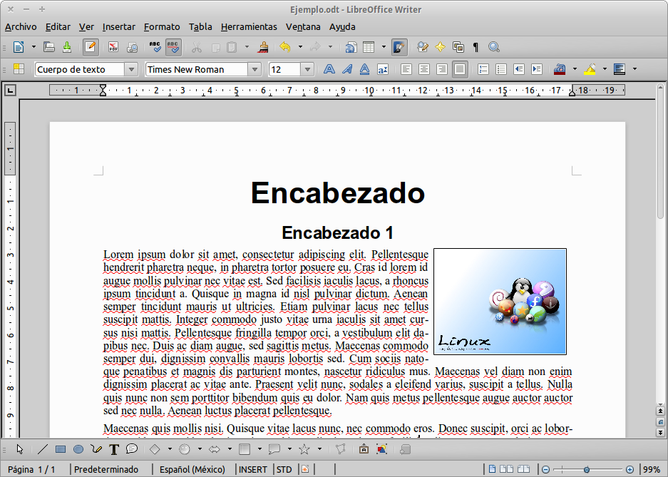

Introducción al lado libre
Sobre Linux, Bash y sus beneficios y poderes
by Marilyn & Marco
Hola Mundo!, eh digo...
Hola a todos!
En esta ocasión vamos a estar hablando de:
- "Introducción a GNU/Linux"
- "Las 4 libertades del Software Libre"
- "Funcionamiento de un GNU/Linux"
- "Shell (Bash) y la Terminal"
Quizás ustedes digan "qué cosa?!" y pongan la siguiente cara:

Pero...
Que no panda el cúnico
Nos vamos a encargar de solucionar todas (o casi todas) las dudas que aparezcan
Sin más preámbulos...
(y porque se nos acaba el tiempo)Comenzamos!
Esperamos que les guste!
Qué es GNU/Linux?
GNU/Linux (ñu-linux) es un sistema operativo, una gran pieza de software que controla un computador. Es parecido a Microsoft Windows, pero completamente libre. El nombre correcto es GNU/Linux pero se le suele decir "Linux"
No está apoderado ni centralizado
GNU/Linux no es el producto de una sola compañía, es el resultado de la contribución de un gran número de comunidades y personas. De hecho, Linux es el nucleo en el cual se basan muchos productos diferentes: las llamadas distribuciones
Gratis no es igual a libre
Cuando obtiene una distribución de GNU/Linux, también obtiene la libertad para estudiarla, copiarla, cambiarla, y redistribuirla. Eso es lo que la hace realmente libre
Un poco de historia
El proyecto GNU, iniciado en 1983 por Richard Stallman, tiene el objetivo de crear un "sistema de software compatible con Unix" compuesto enteramente de software libre. El trabajo comenzó en el año 1984. Más tarde, en 1985, Stallman comenzó la Free Software Foundation y escribió la Licencia Pública General de GNU (GNU GPL) en 1989
Richard Stallman
El Ricky de la gente
En 1991, mientras asistía a la Universidad de Helsinki, Linus Torvalds se interesó por los sistemas operativos. Él comenzó a trabajar en su propio núcleo de un sistema operativo, lo que eventualmente se convirtió en el núcleo de Linux
Linus Torvalds
Vieron que parecido a "Linux" el nombre?

Actualidad
Hoy en día existen muchas distribuciones basadas en el nucleo de Linux para todo tipo de necesidades
Hay distribuciones para gamers, para músicos, para artístas, para desarrolladores, para servidores, para el uso común, etc.
Algunas tienen interfaces gráficas más desarrolladas y otras más simples
Y así podríamos seguir por siempre...
Bizcochuelos libres
Primer Libertad
Cualquier persona es libre de usar el bizcochuelo para lo que quiera
Libertad 0
Cualquier persona es libre de ejecutar el programa con cualquier propósito
Segunda Libertad
Cualquier persona es libre de conocer cómo está hecho el bizcochuelo, aprender a hacerlo y personalizarlo a gusto
Bizcochuelo
Huevos, harina, manteca, leche y azucar

Pero que pasa si agregamos dulce de leche en el medio?...
Tenemos el bizcochuelo con dulce de leche
Bizcochuelo con dulce de leche
Huevos, harina, manteca, leche, azucar y dulce de leche
Libertad 1
Cualquier persona es libre de estudiar cómo funciona el programa y adaptarlo a sus necesidades. Es necesario que el código del programa esté liberado para que cualquier lo pueda leer y modificar

Tercera Libertad
Cualquier persona es libre de convidar el bizcochuelo, a quién quiera
Libertad 2
Cualquier persona es libre de distribuir copias del programa que ayuden a otros usuarios
Cuarta Libertad
Cualquier persona es libre de mejorar el bizcochuelo, y convidar la nueva versión
Libertad 3
Cualquier persona es libre de mejorar el programa y hacer públicas esas mejoras para que la comunidad se beneficie
"Qué me instalaron en la compu?"
Muchos estarán medio asustados por lo que ven en sus pantallas...
Pero no se preocupen que brevemente vamos a dar un paseo por GNU/Linux
Y les prometo que no los va a comer!
Escritorio
Nada que envidiarle a nadie. Incluso es súper lindo!
Explorador de archivos
Son todos iguales... y encima éste funciona mejor!
Ofimática
Acá también hay "word", "excel" y todo eso!
Instalando programas
Más seguro, más fácil, más rápido.
Chupate esa mandarina!
apt-get
Para instalar por la terminal usaremos este comando:
$ apt-get install programa
Vamos a probar con un programa bastante sencillo: GIMP
Para instalarlo vamos a hacer:
$ apt-get install gimp
No se asusten si ven muchas lineas apareciendo
Incluso les pueden preguntar por un Si o por No
Si necesitamos remover algún programa, quizás ya hayan adivinado el comando:
$ apt-get remove gimp
Podemos adicionar el parámetro -purge para que no quede rastro de nada
$ apt-get remove -purge gimp
También tenemos otro comando útil llamado update:
Sirve para actualizar la lista de paquetes disponibles para instalar
$ apt-get update
Navegadores
Firefox, Chromium (apa), Opera. La crème de la crème
Miscelaneas
(Amo esa palabra)
Música, videos y mucho más!... Qué más queres?!
"Ay hijo, creo que toqué algo"
"y apareció esta ventana negra con letras blancas"

Shell y Terminal
Rápidamente, Un shell es un programa que se encarga de ejecutar esas "letritas en blanco y negro", también llamadas comandos
Existen varios tipos de shell. Nosotros vamos a ver Bash (Bourne Again Shell)
Para ingresar a un shell, debemos abrir una Terminal o una Consola
Dentro de la terminal va a aparecer algo así:
marco@marco:/home/marco $
Ese $ es solo para denotar la salida. No hay que agregarlo ya que se genera automaticamente
Jerarquía de Árbol
Todo lo que hay en linux es un archivo y, como dice el título, está ordenado con una jerarquía de árbol
A continuación, el árbol:
Comandos
Los comandos son pequeñas palabras, acrónimos, siglas o cositas que nos permiten comunicarnos con la shell a través de la terminal
Unos ejemplos a continuación:
pwd
ls -l
touch archivo
Una aclaración importante: no vamos a mostrar toda la salida. Solo a partir del $ para evitar confusiones
Es decir, en vez de ver esto:
marco@marco:/home/marco $ pwd
Vamos a ver lo siguiente:
$ pwd
pwd
Print Working Directory. Muestra la carpeta en la que estamos actualmente (o sea, donde estamos "parados" en el sistema)
$ pwd
La salida de este comando sería la siguiente (siguiendo un caso ejemplo):
$ /home/marco
cd
Change Directory. Nos permite movernos entre directorios (o carpetas)
$ cd /home/marco
La salida de este comando (en el caso que la ruta "/home/marco" existiera) sería la siguiente:
marco@marco:/home $ cd /home/marco
marco@marco:/home/marco/ $
En la ejecución anterior, utilizamos una ruta absoluta (siempre empieza con /)
También podemos usar rutas relativas. Usemos el mismo ejemplo:
marco@marco:/home $ cd marco
marco@marco:/home/marco/ $
También hay atajos para hacernos la vida más fácil
Nota: siempre nos guiamos con "el directorio en el que estamos actualmente"
- cd . (Vas al directorio en el que estas actualmente)
- cd .. (Vas al directorio por encima)
- cd ~ (Vas al directorio home)
- cd - (Vas al directorio que visitaste justo antes)
Ejemplos:
$ cd .
$ cd ..
$ cd ~
$ cd -
ls
List. Permite listar los archivos presentes en donde estamos parados.
$ ls
Para nuestra suerte, además de atajos, también tenemos parámetros!. Algunos son:
- ls -a (Lista todos los archivos, incluso los "ocultos")
- ls -r (Lista los archivos pero en order alfabético inverso)
- ls -l (Lista los archivos de manera detallada)
- ls -R (Lista los archivos no solo de la carpeta actual, sino de todas las subcarpetas)
Ejemplos:
$ ls -a
$ ls -r
$ ls -l
$ ls -R
También podemos mezclar los parametros:
$ ls -al
O cambiar el orden:
$ ls -la
touch
Nos permite crear un archivo vacio
También nos permite actualizar la fecha del archivo
$ touch miarchivosupercopado
Si ejecutamos nuevamente el comando en el archivo "miarchivosupercopado", nos actualizará la fecha del mismo
Para comprobar esto, podemos hacer un ls -l para ver la fecha del archivo "miarchivosupercopado" antes de ejecutar el comando touch nuevamente
Luego ejecutamos el comando touch
Finalmente hacemos un ls -l nuevamente para ver como cambió la fecha
file
Este comando nos permite saber con seguridad de que tipo es el archivo
Por qué decimos "con seguridad"?... porque en GNU/Linux, un archivo llamado "banana.gif" no necesariamente es un GIF
Por ejemplo:
$ file banana.gif
Nos va a decir con seguridad de que tipo de archivo estamos hablando
cat
Concatenate. Permite concatenar (unir) y mostrar el contenido de uno o más archivos
Por ejemplo, para mostrar el contenido hacemos:
$ cat archivo1
Para concatenar dos archivos (y mostrar su contenido concatenado) hacemos:
$ cat archivo1 archivo2
Nota: para mantener su salud mental al máximo, no use este comando para archivos más grandes que una casa... su computadora podría explotar
Igual no desespere, el siguiente comando es su solución para estos archivos más grandes que el Titanic
less
Este comando nos permite mostrar el contenido de los archivos "página por página"
Por ejemplo:
$ less archivo
Con estas teclas podremos navegar cuando estamos dentro del archivo en modo less
- q (Sale de modo less y vuelve al shell)
- repag, avpag, flechas (Navega por el archivo)
- g (Va al principio del archivo)
- G (Va al final del archivo)
- /hola (Busca la palabra "hola" dentro del documento)
- h (Muestra la ayuda disponible sobre el uso de less)
history
Con este comando podemos ver el historial de comandos que tipeamos anteriormente
$ history
Tips:
- Si apretamos flecha arriba, nos aparecerá el último comando ejecutado
- Si tipeamos !!, ejecutamos el último comando ejecutado
- Si tipeamos un comando largo, podemos tipear la primer parte, luego apretar tab y la terminal sugerirá opciones para completar ese comando
- Si apretamos ctrl+R, entramos en modo de busqueda inversa
- Empezamos a tipear partes del comando y la terminal nos va mostrando sugerencias
- Con ctrl+R podemos navegar por esas sugerencias
- Una vez que encontramos el comando buscado, apretamos enter para ejecutarlo
Con el comando clear, limpiamos nuestra pantalla
$ clear
cp
copy. Permite copiar y pegar archivos
Por ejemplo:
$ cp archivo /home/marco/Documentos
Primero ponemos el comando, luego el archivo a copiar y finalmente el lugar a pegar dicho archivo
Como siempre hay algo bueno, en este caso también lo hay. Vamos a ver un poco de comodines
- * (Representa cualquier caracter o conjunto de caracteres)
- ? (Representa un solo caracter)
- [] (Representa cualquier caracter entre los corchetes)
Por ejemplo:
$ cp *.jpg /home/marco/Imagenes
$ cp vacas???.jpg /home/marco/Imagenes
$ cp [0-9][0-9]fotos.jpg /home/marco/Imagenes
Ejercicio
En algún momento tenía que venir esta parteHagamos un cp en una carpeta que tenga un par de archivos dentro. Algo así:
$ cp libros/ /home/marco/Documentos
No funcionó, verdad?
Digan la verdad, se la creyeron totalmenteLo que pasa es que el comando cp solamente copia de a un archivo
Por suerte, tenemos a nuestros amigos parámetros para salvarnos una vez más
- -r (Copia recursivamente carpetas y archivos)
- -i (Nos consulta si deseamos sobreescribir o no el archivo)
Por ejemplo:
$ cp -i *.jpg /home/marco/Imagenes
$ cp -r florida/ /home/marco/Imagenes
mv
move. Permite mover y renombrar archivos
Si queremos renombrar:
$ mv archivoviejo archivonuevo
Podemos renombrar carpetas también:
$ mv carpetavieja carpetanueva
Si queremos mover:
$ mv archivo /home/marco/Documentos
Si queremos mover más de un archivo:
$ mv doc1 doc2 /home/marco/Documentos
También, al igual que con cp, podemos usar parámetros:
$ mv -i archivo /home/marco/Documentos
Incluso podemos hacer respaldos de los archivos:
$ mv -b archivo /home/marco/Documentos
mkdir
make directory. Permite crear directorios
Por ejemplo:
$ mkdir directorio
Para crear múltiples directorios:
$ mkdir directorio1 directorio2
Pero cuidado...
Si queremos crear un directorio dentro de otro, debemos usar un parámetro
-p (Parent (padre en ingles), nos permitirá hacer esto)
$ mkdir -p directorio/subdirectorio
rm
remove. Permite eliminar archivos permanentemente
Este debe ser uno de los comandos más peligrosos (más malo que el cuco)
Cuando ejecutamos este comando, estamos borrando el archivo para siempre y sin vuelta atrás
Por eso debemos actuar con mucho cuidado a la hora de usarlo
Por ejemplo:
$ rm archivo
Y adiós para siempre...
Pero no todo es tan fácil de eliminar
Hay archivos que están protegidos contra escritura
Pero como dice el dicho: hecha la ley, hecha la trampa
Existe un parámetro para borrar estos archivos
-f (Fuerza la eliminación del archivo)
$ rm -f archivo
Y ahora sí...
Adiós para siempre...
En cuanto a los directorios, debemos usar la variante rmdir o el parámetro -r
$ rm -r directorio
$ rmdir directorio
Nota: con -r, eliminamos todo dentro de directorio. Con rmdir, eliminamos a directorio inclusive
find
Nos permite encontrar archivos
Este comando es bastante sencillo de utilizar:
$ find /home/marco -name foto.jpg
Indicamos el lugar y el nombre
También podemos pedirle que busque un tipo de archivo
$ find /home -type d -name midirectorio
d es para buscar directorios
Lo bueno de este comando es que automáticamente realiza una búsqueda recursiva
help
Nos muestra ayuda e información sobre algún comando
Si alguna vez estamos en duda o queremos explorar más, este comando nos ayudará:
$ help echo
Esto nos mostrará información sobre el comando echo
En algunos casos podremos probar lo siguiente también:
$ mkdir --help
$ cp -h
Pero no todos siguen este estandar
man
manual. Nos permite ver aún más información sobre un comando
En realidad no es más inforamción, sino el famoso manual de uso de ese comando
Si hacemos:
$ man ls
Veremos el manual del comando ls
whatis
Nos permite conocernos mejor...
Mentira... Este comando nos muestra una breve descripción del comando
Por ejemplo:
$ whatis cat
Esto nos brinda una breve descripción de qué es (y qué hace) el comando cat
alias
Permite "guardar" comandos en "variables"
A veces tenemos que tipear un comando muy largo o repetidas veces
Para esto tenemos los alias:
$ alias listar='ls -l'
Y listo, ahora solo tenemos que hacer lo siguiente:
$ listar
Y nos va a ejecutar el comando "ls -l"
Tengamos en cuenta que estos alias se van a borrar una vez que reiniciemos
Para guardarlos de manera permanente, debemos agregarlos en:
$ ~/.bashrc
Para eliminar un alias, hacemos lo siguiente:
$ unalias listar
exit
Todo tiene un final, incluso esta maravilla de taller
No lloren por mi...Con este comando podremos salir de la terminal
Es tan simple como:
$ exit
O en su otra variante:
$ logout
Agradecimientos y Actores

Dudas y consultas
Marilyn Pirrello
- E-mail: marilyn.pirrello@gmail.com
- Twitter: @marilynpi
Marco Maza
- E-mail: marcoagustinmaza92@gmail.com
- Twitter: @marcoagusmaza
Gracias!
Aplausos
Obra distribuída bajo licencia Creative Commons Atribución 4.0 Internacional